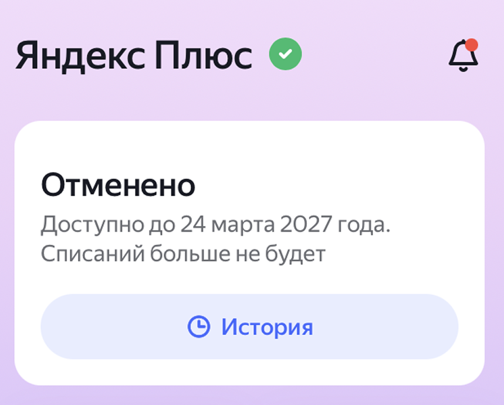

Промокод Яндекс Плюс: Подписка бесплатно (2026 год)
Яндекс Плюс — это единая подписка, которая открывает доступ к миллионам треков в Яндекс Музыке, тысячам фильмов на Кинопоиске и аудиокнигам в Букмейте. Кроме того, она позволяет копить и тратить баллы кешбэка в сервисах Яндекса (Такси, Еда, Маркет). Платить полную стоимость совсем необязательно — можно использовать специальный код и пользоваться всеми сервисами бесплатно.
Где взять рабочий код для подписки?
Найти актуальные скидки бывает непросто, так как акции постоянно меняются. Если вам нужен рабочий промокод яндекс плюс, лучше всего искать его на специализированных ресурсах, где купоны обновляются ежедневно. Там можно подключить подписку на месяц, 60 или 90 дней бесплатно, а также найти эксклюзивные тарифы за 1 рубль.
Каталог актуальных купоновБесплатный Яндекс Плюс для старых пользователей
Большинство акций в интернете рассчитано только на новых клиентов. Но найти рабочий промокод Яндекс Плюс для старых пользователей в 2026 году вполне реально, если знать, как это работает.
- Акции на возврат: Если вы давно отменили подписку, Яндекс часто сам предлагает коды на 30 или 45 дней, чтобы вернуть вас. Такие купоны регулярно появляются на агрегаторах скидок.
- Мультиподписка: Вы можете стать участником семейного аккаунта друга или родственника — до 4 человек в одной группе могут пользоваться сервисом совершенно бесплатно, при этом у каждого будут свои рекомендации в Музыке и на Кинопоиске.
Периоды бесплатных подписок
В зависимости от доступных акций, условия могут меняться:
- На 90 дней: Самое выгодное предложение. Целых 3 месяца можно смотреть кино и слушать музыку без ограничений.
- За 1 рубль: Часто встречаются коды, которые дают доступ на длительный срок всего за рубль (сумма списывается для привязки карты).
- Подписка на год: Полностью бесплатный годовой доступ получить сложно, но часто встречаются купоны на скидку до 50% при оплате за 12 месяцев сразу.
Как ввести и активировать промокод?
Если код у вас уже на руках, но вы не знаете, куда его вводить, следуйте этой простой инструкции:
- Откройте браузер и авторизуйтесь в личном кабинете (Яндекс ID).
- Перейдите на официальную страницу активации подарков:
plus.yandex.ru/gift. - В специальное поле нужно ввести промокод Яндекс Плюс.
- Нажмите кнопку «Активировать».
- Система может попросить привязать банковскую карту. При проверке спишется и сразу вернется небольшая сумма (обычно 11 рублей).
Важно: Сразу после того как вы смогли активировать код, включится автопродление. Ниже рассказываем, как избежать лишних трат.
Как отключить подписку Яндекс Плюс навсегда?
Если бесплатный период заканчивается, и вы не планируете платить 399 рублей в месяц, услугу нужно вовремя остановить.

Инструкция для мобильного телефона и ПК:
- Войдите в личный кабинет Яндекс Плюс через браузер или мобильное приложение.
- Нажмите на свой профиль и выберите раздел «Плюс».
- В самом низу страницы найдите пункт управления и нажмите «Отменить подписку».
- Яндекс будет предлагать вам скидки или временную заморозку. Нажимайте «Всё равно отменить» на каждом этапе, пока не увидите подтверждение об успешном отключении.
Хитрость: даже если вы отключите Плюс в тот же день, когда активировали код, все подарочные дни сохранятся за вами до конца срока!
Горячая линия Яндекс Плюс: помощь и возврат средств
Иногда пользователи забывают отвязать карту, и происходит нежелательное списание. Если вы обнаружили списание и хотите узнать, как вернуть деньги за подписку Яндекс Плюс, вам необходимо сразу обратиться в службу поддержки. Сделать это быстрее всего через онлайн-чат в личном кабинете — как правило, техподдержка идет навстречу и возвращает средства на карту Сбербанка или любого другого банка, если вы не пользовались сервисами после продления.